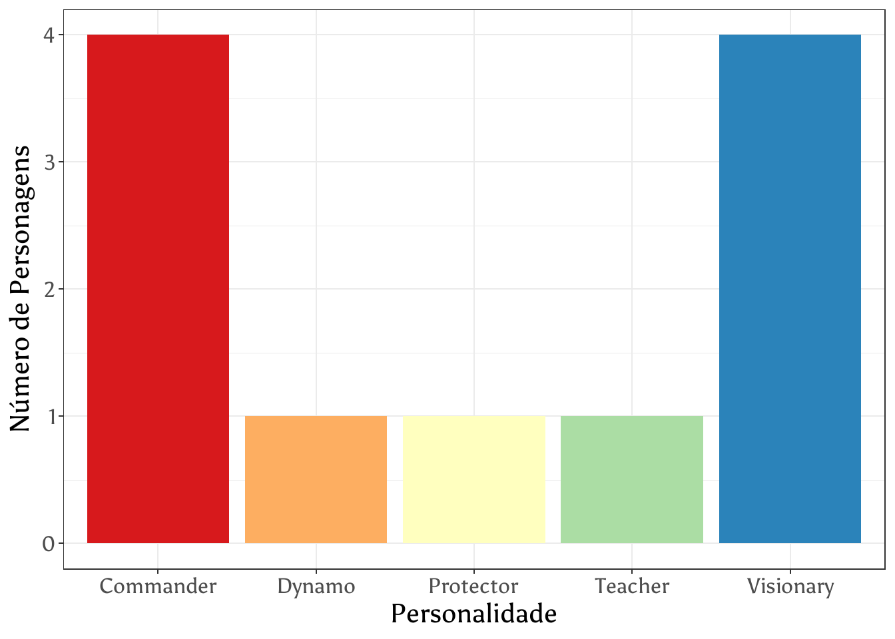
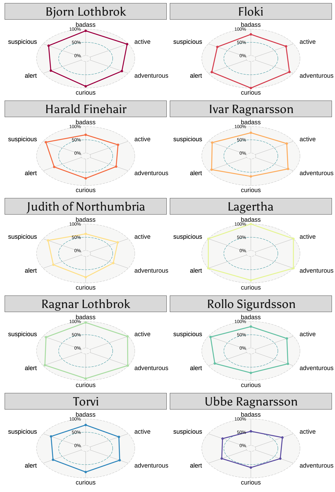

Code
library(tidyverse)
library(showtext)
library(ggradar2)
library(knitr)O tidytuesday se trata de um projeto semanal que disponibiliza datasets para explorar as habilidades de manipulação e visualização de dados utilizando, principalmente, as ferramentas do tidyverse.
Para o projeto final do curso Visualização de Dados foi utilizado o dataset disponibilizado no dia 16/08/2022. Esse dataset veio do Open-Source Psychometrics Project e inclui informações sobre personagens de diversas séries e seus traços de personalidade. Como são muitos, escolhi os personagens da série Vikings para analisar.
Para as análises utilizei os pacotes:
library(tidyverse)
library(showtext)
library(ggradar2)
library(knitr)O download do dataset foi feito por meio do link presente no repositório do github.
characters <- read_csv('https://raw.githubusercontent.com/rfordatascience/tidytuesday/master/data/2022/2022-08-16/characters.csv')
psych_stats <- read_csv('https://raw.githubusercontent.com/rfordatascience/tidytuesday/master/data/2022/2022-08-16/psych_stats.csv')
myers_briggs <- read_csv('https://raw.githubusercontent.com/rfordatascience/tidytuesday/master/data/2022/2022-08-16/myers_briggs.csv')glimpse(characters)Rows: 889
Columns: 7
$ id <chr> "F2", "F1", "F5", "F4", "F3", "F6", "EU1", "EU2", "EU6", "E…
$ name <chr> "Monica Geller", "Rachel Green", "Chandler Bing", "Joey Tri…
$ uni_id <chr> "F", "F", "F", "F", "F", "F", "EU", "EU", "EU", "EU", "EU",…
$ uni_name <chr> "Friends", "Friends", "Friends", "Friends", "Friends", "Fri…
$ notability <dbl> 79.7, 76.7, 74.4, 74.3, 72.6, 51.6, 86.5, 84.2, 82.6, 65.6,…
$ link <chr> "https://openpsychometrics.org/tests/characters/stats/F/2",…
$ image_link <chr> "https://openpsychometrics.org/tests/characters/test-resour…glimpse(psych_stats)Rows: 356,489
Columns: 10
$ char_id <chr> "F2", "F2", "F2", "F2", "F2", "F2", "F2", "F2", "F2", "…
$ char_name <chr> "Monica Geller", "Monica Geller", "Monica Geller", "Mon…
$ uni_id <chr> "F", "F", "F", "F", "F", "F", "F", "F", "F", "F", "F", …
$ uni_name <chr> "Friends", "Friends", "Friends", "Friends", "Friends", …
$ question <chr> "messy/neat", "disorganized/self-disciplined", "diligen…
$ personality <chr> "neat", "self-disciplined", "diligent", "on-time", "com…
$ avg_rating <dbl> 95.7, 95.2, 93.9, 93.8, 93.6, 93.4, 92.9, 92.2, 92.2, 9…
$ rank <dbl> 9, 27, 87, 34, 56, 23, 2, 14, 170, 75, 201, 58, 11, 215…
$ rating_sd <dbl> 11.7, 11.2, 10.4, 14.3, 13.4, 14.5, 15.0, 17.3, 12.1, 1…
$ number_ratings <dbl> 1079, 1185, 1166, 236, 1168, 1173, 174, 1196, 129, 1183…glimpse(myers_briggs)Rows: 14,224
Columns: 7
$ char_id <chr> "F2", "F2", "F2", "F2", "F2", "F2", "F2", "F2", "F2", "…
$ char_name <chr> "Monica Geller", "Monica Geller", "Monica Geller", "Mon…
$ uni_id <chr> "F", "F", "F", "F", "F", "F", "F", "F", "F", "F", "F", …
$ uni_name <chr> "Friends", "Friends", "Friends", "Friends", "Friends", …
$ myers_briggs <chr> "ESTJ", "ISTJ", "ENTJ", "ESFJ", "ENFJ", "ISFJ", "INTJ",…
$ avg_match_perc <dbl> 66.8, 63.3, 63.1, 62.8, 61.0, 60.7, 60.7, 58.2, 53.8, 5…
$ number_users <dbl> 547, 1475, 2286, 592, 3842, 1602, 8827, 12519, 765, 120…O teste de Myers Briggs foi criado por Isabel Myers e Katharine Briggs e visa classificar a pessoa dentro de 16 personalidades, que podem ser acessadas com mais detalhe nesse site. Sabendo disso, os personagens de Vikings foram analisados e foi possível observar que a maioria é considerado ENTJ (Líder) e ENTP (Visionários). As personalidades chamadas de Protetor, Professor e Dinâmico também foram encontradas.
myers_briggs <- myers_briggs |>
mutate(label = case_when(
myers_briggs == "INTJ" ~ "Mastermind",
myers_briggs == "INTP" ~ "Architect",
myers_briggs == "ENTJ" ~ "Commander",
myers_briggs == "ENTP" ~ "Visionary",
myers_briggs == "INFJ" ~ "Counselor",
myers_briggs == "INFP" ~ "Healer",
myers_briggs == "ENFJ" ~ "Teacher",
myers_briggs == "ENFP" ~ "Champion",
myers_briggs == "ISTJ" ~ "Inspector",
myers_briggs == "ISFJ" ~ "Protector",
myers_briggs == "ESTJ" ~ "Supervisor",
myers_briggs == "ESFJ" ~ "Provider",
myers_briggs == "ISTP" ~ "Crafter",
myers_briggs == "ISFP" ~ "Composer",
myers_briggs == "ESTP" ~ "Dynamo",
myers_briggs == "ESFP" ~ "Performer",
TRUE ~ "None"))
myers_count <- myers_briggs |>
filter(uni_name == "Vikings") |>
group_by(char_name) |>
mutate(max_match = max(avg_match_perc)) |>
ungroup() |>
filter(max_match == avg_match_perc) |>
group_by(label) |> count()
myers_count |>
ggplot(aes(y = n, x = label, fill = label)) +
geom_col(show.legend = FALSE) +
theme_bw() +
labs(y = "Número de Personagens", x = "Personalidade") +
theme(text = element_text(family = font, size = 30)) +
scale_fill_brewer(palette = "Spectral")
Dentre os considerados Líderes (Commanders) temos Bjorn Lothbrok, Judith of Northumbria, Lagertha e Ragnar Lothbrok. Como Dinâmico (Dynamo) temos o Rollo Sigurdsson, como Protetor (Protector) o Ubbe Ragnarsson e como Professor (Teacher) a Torvi. Dentre os Visionários (Visionary) temos o Floki, Harald Finehair, Ivar Ragnarsson e Ragnar Lothbrok.
myers_briggs |>
filter(uni_name == "Vikings") |>
group_by(char_name) |>
mutate(max_match = max(avg_match_perc)) |>
ungroup() |>
filter(max_match == avg_match_perc) |>
group_by(label, char_name) |>
count() |>
select(-n) |>
knitr::kable(col.names = c("Personalidade", "Personagem"))| Personalidade | Personagem |
|---|---|
| Commander | Bjorn Lothbrok |
| Commander | Judith of Northumbria |
| Commander | Lagertha |
| Commander | Ragnar Lothbrok |
| Dynamo | Rollo Sigurdsson |
| Protector | Ubbe Ragnarsson |
| Teacher | Torvi |
| Visionary | Floki |
| Visionary | Harald Finehair |
| Visionary | Ivar Ragnarsson |
| Visionary | Ragnar Lothbrok |
O primeiro passo para analisar as personalidades de todos os personagens foi recuperar quais eram iguais entre todos eles.
psych_stats |>
filter(char_name %in% c("Ragnar Lothbrok",
"Floki",
"Lagertha",
"Rollo Sigurdsson",
"Ivar Ragnarsson",
"Bjorn Lothbrok",
"Torvi",
"Harald Finehair",
"Ubbe Ragnarsson",
"Judith of Northumbria")) |>
group_by(question, personality) |>
summarise(n = n(), .groups = "drop") |>
filter(n == 10) |>
select(-n) |>
head() |>
knitr::kable(col.names = c("Pergunta", "Personalidade"))| Pergunta | Personalidade |
|---|---|
| active/slothful | active |
| adventurous/stick-in-the-mud | adventurous |
| alert/oblivious | alert |
| apathetic/curious | curious |
| awkward/suspicious | suspicious |
| badass/weakass | badass |
Feito isso, escolhi seis das personalidades e plotei através de um gráfico de radar a porcentagem de cada personalidade de cada personagem.
scores <- psych_stats |>
filter(char_name %in% c("Ragnar Lothbrok",
"Floki",
"Lagertha",
"Rollo Sigurdsson",
"Ivar Ragnarsson",
"Bjorn Lothbrok",
"Torvi",
"Harald Finehair",
"Ubbe Ragnarsson",
"Judith of Northumbria"),
question %in% c("active/slothful",
"adventurous/stick-in-the-mud",
"alert/oblivious",
"apathetic/curious",
"awkward/suspicious",
"badass/weakass")) |>
select(c(char_name, personality, avg_rating)) |>
mutate(group = char_name) |> rename(name = char_name) |>
mutate(across(where(is.numeric), ~ .x * 0.01)) |>
pivot_wider(names_from = "personality", values_from = "avg_rating")
facet_scores <- scores |> mutate(facet1 = name) |> column_to_rownames(var = "name")
grafico_radar <- ggradar2(plot.data = facet_scores,
multiplots = TRUE,
plot.legend = FALSE,
polygonfill = FALSE,
gridline.label = seq(0, 100, 50),
axis.label.size = 22, grid.label.size = 20) +
facet_wrap(vars(group), ncol = 2) +
coord_cartesian(clip = "off") +
theme(text = element_text(size = 150, family = font)) + scale_color_brewer(palette = "Spectral")
ggsave("radar_graph.png",
plot = last_plot(),
device = "png",
width = 15,
height = 22) 
Os resultados obtidos para a personalidade de cada personagem está bastante de acordo com o que se observa de cada um na série.